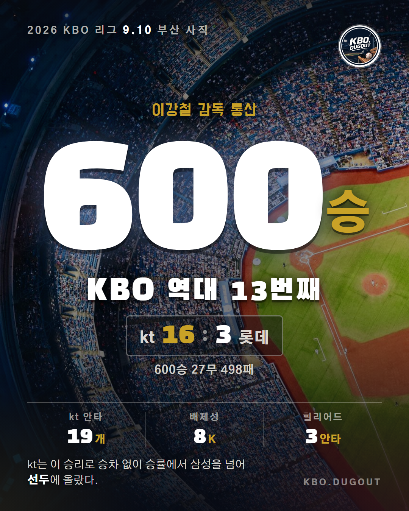

이강철 감독이 통산 600승을 채웠습니다. KBO에서 열세 번째입니다. 감독 승수는 한 시즌에 몰아 쌓을 수 있는 기록이 아닙니다. 600승 27무 498패, 1,125경기를 지휘하는 동안 쌓인 숫자입니다. 이날 kt는 사직에서 롯데를 16-3으로 이겼습니다. 선발 배제성이 6이닝을 3피안타 1볼넷 무실점으로 막고 삼진 8개를 잡는 동안 타선이 19안타를 몰아쳤습니다. 힐리어드가 5타수 3안타 1홈런 2타점, 김민혁이 4타수 3안타 3타점으로 뒤를 받쳤고, 배제성은 이 경기로 시즌 2승째를 올렸습니다. 이 승리로 kt의 승률은 .610이 됐습니다. 삼성이 .608입니다. 승패 차가 같아 승차는 0.0입니다. #KBO #프로야구 #KBO리그 #이강철 #배제성 #힐리어드 #김민혁 #KT위즈 #삼성라이온즈 #LG트윈스 #KIA타이거즈 #두산베어스 #NC다이노스 #한화이글스 #롯데자이언츠 #SSG랜더스 #키움히어로즈
QA 없음